As catorze jornadas que a plataforma atende, mostradas nas próprias telas, e um caderno de testes por jornada, que conduz a implantação de um cliente e fixa os critérios de aceite. Aqui as jornadas não são funis de descoberta: são ciclos operacionais ancorados no calendário fiscal.
O mapa de jornada clássico — descoberta, consideração, decisão, com uma faixa de emoções ao longo do percurso — foi desenhado para produtos em que o usuário escolhe avançar e pode desistir. Não é o caso aqui.
No SplitHub, o usuário não decide se vai conciliar o mês: o calendário fiscal decide por ele. A nota chega queira ele ou não, e o prazo de apropriação corre sozinho. A pergunta relevante não é "o que o usuário sente nesta etapa?", e sim "o que acontece com o crédito se ele não agir a tempo?".
São ciclos, não percursos. A maior parte das jornadas se repete em cadência fixa — diária, por janela, mensal. O usuário não conclui a jornada; ele a percorre de novo no período seguinte.
O estado do dado é protagonista — e pertence aos órgãos. Cada etapa move um registro fiscal, mas quem detém o estado do ciclo é a Receita Federal, na CBS, e o Comitê Gestor, no IBS. O SplitHub recebe esse estado, concilia e evidencia a divergência; não o decide (Ciclo de vida, §10).
O risco é assimétrico e datado. Não agir tem custo mensurável, com prazo: o crédito vence, prescreve ou é glosado. O eixo de exposição importa mais que o emocional.
Por isso o eixo de emoção dá lugar a três camadas que o domínio exige — estado do dado, risco de inação e instrumento de observação — e, nesta versão, a uma quarta: o teste que prova que a etapa funciona no ambiente do cliente.
A v2.0 é de 08/09/2026. Desde então o produto mudou o suficiente para a maior parte das jornadas precisar ser reescrita.
| Mudança | Efeito nas jornadas |
|---|---|
| Sem split payment na primeira versão (05/10) | O contrato define RAD ou Fornecedor. J-01, J-02, J-07 e o encadeamento perdem o terceiro caminho. |
| Duas apurações, com modelos opostos | A CBS é consultada na Receita Federal; o IBS chega do Comitê Gestor por webhook (MOC v1.10, 23/09). J-04 passa a ter duas leituras, e J-01 credencia as duas. |
| Parcialidade do crédito (22–23/10) | A partição tem dez parcelas, e apropriação e glosa podem ser parciais. J-04 deixa de ser binária (apropriado ou glosado). |
| Inconsistências virou módulo | São 21 tipos em seis famílias, com cinco estados e prioridade calculada; cada divergência vira card ligado ao documento e ao registro. J-05 foi reescrita. |
| O Portal do Fornecedor ficou ativo | O fornecedor envia comprovante, contesta e vê o aviso de recolhimento assumido. J-09 deixou de ser passiva e ganhou três subjornadas. |
| Módulos novos | Entram quatro jornadas: J-14 Ressarcimento, J-15 Fechamento da competência, J-16 Eventos fiscais e J-17 Débito. J-10 vem do PRD de Analytics. |
| Execução RAD entregue | J-03 é supervisão. A assinatura dos webhooks está resolvida; a alçada foi descartada; a validação da duplicata segue fora. As contradições da antiga seção 12 saíram. |
| Caderno de testes | Cada jornada ganhou casos de teste por fase de implantação, com critério de aceite e a situação no produto hoje. |
Derivadas dos perfis de acesso e dos destinatários das automações, não de suposição. A TI do cliente entra nesta versão: sem ela, a implantação não passa da fase de integração.
| Persona | Evidência no produto | Pergunta que traz | Cadência | Jornadas |
|---|---|---|---|---|
| Analista fiscal | Destinatário de REL-001 (créditos); perfil operador | "O que preciso resolver hoje para não perder crédito?" | Diária | J-02, J-16, J-04, J-17, J-15, J-05, J-10 |
| Analista de tesouraria | Destinatário de REL-003 (pagamentos) e REL-004 (ressarcimento) | "O que a política vai gerar e o que falhou?" | Por janela | J-03, J-14 |
| Compliance | Destinatário de REL-002 (inconsistências) | "Onde há divergência entre o que escriturei e o que cada órgão apurou?" | Semanal | J-05 |
| Controladoria | Destinatário de REL-001 | "Quanto crédito está reconhecido e quanto está em risco?" | Mensal | J-04, J-15, J-08 |
| CFO / gestor fiscal | Consumidor do Início e do Analytics | "Estamos aproveitando o crédito a que temos direito?" | Mensal / trimestral | J-06, J-08 |
| Administrador | Acesso a Configurações | "A plataforma reflete nossos acordos?" | Eventual | J-01, J-07 |
| TI do cliente nova | Dono das credenciais em Integrações e do middleware | "As chamadas entram, os eventos saem e a assinatura confere?" | Na implantação e por incidente | J-01, J-02, J-16, J-03 |
| Fornecedor | Perfil restrito ao próprio CNPJ e ao grupo | "O que devo a este cliente, e o que ele já assumiu?" | Eventual | J-09 |
Agrupadas por natureza, não por módulo. A natureza decide como a jornada é apresentada, medida e testada.
| ID | Jornada | Natureza | Persona principal | Cadência | Métrica de sucesso | Casos |
|---|---|---|---|---|---|---|
| J-01 | Implantação da plataforma | Configuração | Administrador do cliente | Uma vez · semanas | 100% dos CNPJs com contrato vigente; conexões aprovadas | 9 |
| J-02 | Ingestão e validação de documentos fiscais | Ciclo operacional | Analista fiscal | Diária · contínua | % de documentos sem inconsistência | 8 |
| J-16 | Tratamento de eventos fiscais nova | Ciclo operacional | Analista fiscal | Contínua · por evento | Eventos pendentes e divergentes por tributo | 6 |
| J-03 | Operação de pagamentos RAD | Ciclo operacional | Analista de tesouraria | Por janela · supervisão | Taxa de automação; zero guias vencidas | 8 |
| J-04 | Conciliação e apropriação do crédito | Ciclo operacional | Analista fiscal · controladoria | Diária · fecha no mês | % apropriado sobre originado | 9 |
| J-17 | Apuração do débito e extinção nova | Ciclo operacional | Analista fiscal | Por ciclo de faturamento | % do débito extinto; vencido = 0 | 6 |
| J-15 | Fechamento da competência nova | Ciclo operacional | Analista fiscal · controladoria | Mensal | Competência fechada no prazo, igual ao órgão | 6 |
| J-05 | Tratamento de inconsistências | Exceção | Analista fiscal · compliance | Contínua · por evento | Tempo de resolução; valor em risco aberto | 8 |
| J-06 | Prevenção de perda por prazo | Gestão de risco | Gestor fiscal | Mensal · régua contínua | Valor prescrito no período (meta: zero) | 6 |
| J-07 | Governança contratual | Gestão de risco | Administrador · jurídico | Eventual + revisão trimestral | Notas sob contrato vencido | 6 |
| J-14 | Ressarcimento do saldo credor nova | Gestão de risco | Analista fiscal · tesouraria | Mensal · por tributo | Recebido = deferido corrigido | 7 |
| J-08 | Prestação de contas e decisão | Saída | CFO · controladoria | Mensal · trimestral | Índice de aproveitamento | 5 |
| J-09 | Relação com o fornecedor pelo portal | Externa | Fornecedor | Eventual · audiência externa | Redução de contatos manuais | 6 |
| J-10 | Esclarecer uma dúvida de enquadramento | Saída | Analista fiscal | Eventual | Respostas com citação válida | 5 |
J-01 existe para que ela funcione; J-02, J-16 e J-03 a alimentam; J-05 e J-06 tratam o que ela deixa passar; J-15 consome o que ela apropria; J-08 reporta o resultado. Tratar as catorze como pares perde essa hierarquia — e com ela a ordem da implantação.
Os IDs de J-01 a J-10 continuam valendo; as jornadas novas começam em J-14. J-11 a J-13 ficam reservadas, porque o PRD do Portal já as usa para as subjornadas que aqui são J-09.1 a J-09.3. Cinco PRDs usam J-xx com outro significado e serão realinhados a esta tabela:
| PRD | Como o PRD chama hoje | Jornada global |
|---|---|---|
| Início | J-01 abrir o sistema e saber se está tudo bem · J-06 posição do período · J-09 comparar entidades do grupo | J-08 |
| Início | J-02 descobrir o que exige ação hoje | J-06 |
| Débito | J-06 posição · J-04 investigar documento · J-08 como o débito foi extinto | J-17 |
| Débito | J-03 tratar o que impede a apuração de fechar | J-15 · J-05 |
| Automações | J-06 receber a posição sem pedir · J-03 cobrar e escalar a cobrança · J-07 levar a inconsistência ao chamado | J-08 · J-06 · J-05 |
| Analytics | J-05 planejar caixa · J-07 onde se perde crédito · J-08 avaliar fornecedores · J-10 dúvida de enquadramento | J-08 · J-06 · J-07 · J-10 |
| Portal do Fornecedor | J-11 · J-12 · J-13 · J-08 evitar o pagamento em dobro | J-09.1 · J-09.2 · J-09.3 · J-09 |
Cada jornada tem três partes: a ficha que a enquadra, a tela do protótipo onde ela acontece e o caderno de testes que prova que ela funciona no ambiente do cliente.
O cabeçalho traz persona, gatilho, resultado e métrica, a cadência e a faixa de MVP dos módulos centrais. Cada etapa tem quatro camadas fixas:
| Camada | Conteúdo | Para que serve |
|---|---|---|
| Onde | Módulo e tela da ação | Torna a etapa verificável: sem tela, a etapa é aspiracional |
| Estado | Como o dado muda — statusCredito, partição, campos gravados | É o registro objetivo de que a etapa aconteceu |
| Risco | O que se perde se a etapa falhar | Substitui a "dor" do mapa clássico por exposição concreta |
| Instrumento | KPI, gráfico ou alerta que sinaliza a etapa | Revela etapa sem observabilidade |
Quando a etapa bifurca, um bloco de decisão nomeia a condição e os caminhos.
As telas são capturas do protótipo da avaliação, com a base sintética. Os valores são ilustrativos; o que importa é onde a informação está e como ela se lê. Clicar abre a tela em tamanho real.
Cada caso de teste é escrito para ser executado no ambiente do cliente e virar critério de aceite. O resultado esperado é o próprio critério: ou ele acontece, ou o caso reprova.
| Campo | O que registra |
|---|---|
| ID | CT-J04-05: jornada e sequência. É o identificador que vai para o termo de aceite |
| Fase | Em que fase da implantação o caso é executado — ver a seção 12 |
| Cenário e dados | O que montar e o que fazer. Valores redondos, CBS e IBS sempre separados |
| Resultado esperado | O que precisa acontecer para o caso passar |
| Responsável | Quem executa do lado do cliente, com quem da Positivo |
| Produto hoje | A situação da funcionalidade na versão atual. Caso que depende de algo parcial ou não implementado não reprova a implantação: entra no plano de entregas |
A jornada que faz as outras funcionarem. Acontece uma vez, mas as conexões e a política de RAD seguem vivas depois dela.
cnpj_divergente
InstrumentoKPIs de CNPJs ativos, matrizes e filiais
dfs:write, dfs:read) e alcance por CNPJ, segredo exibido uma única vez. Saída: URL HTTPS, eventos assinados e chave de assinatura própria
RiscoCredencial com escopo amplo demais ou URL de saída sem assinatura verificada
InstrumentoTaxa de aceite das chamadas, taxa de entrega dos eventos e teste de conexão
Contrato exige fornecedor cadastrado, que exige organização definida. Conexão de saída precisa existir antes da política de RAD, porque a política aponta para ela. Ingerir documentos antes dos contratos produz notas sem cobertura, que aparecem na hora em vermelho no KPI de cobertura.
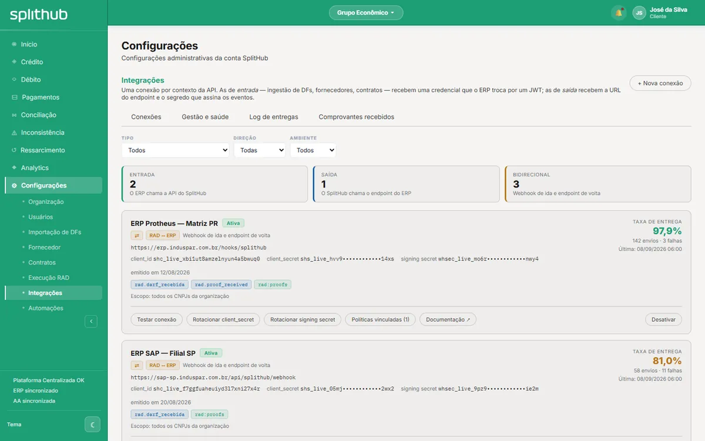
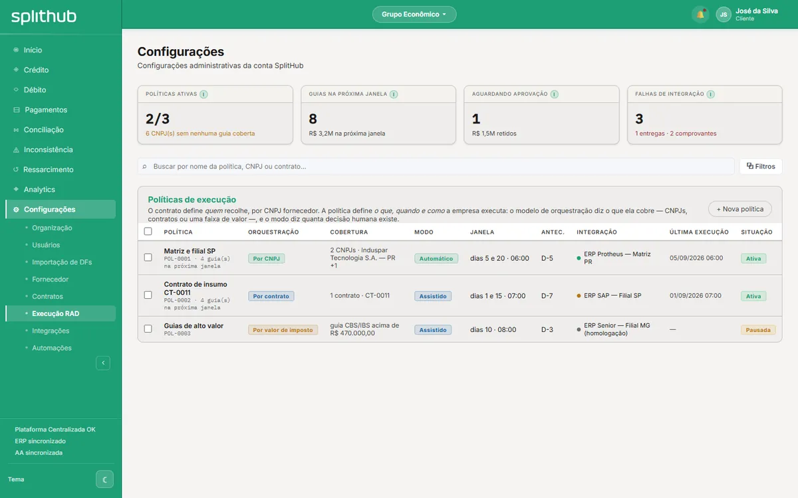
| ID | Fase | Cenário e dados | Resultado esperado — critério de aceite | Responsável | Produto hoje |
|---|---|---|---|---|---|
| CT-J01-01 | F1 | Carregar a lista oficial de CNPJs do cliente (matriz e filiais). | Todos os CNPJs ativos, com UF e tipo; a contagem bate com a lista oficial. | Cliente · Positivo | Implementado |
| CT-J01-02 | F1 | Carregar os fornecedores do período de teste e tentar cadastrar um CNPJ repetido. | 100% dos fornecedores do escopo cadastrados e agrupados; o CNPJ duplicado é bloqueado com mensagem. | Cliente | Implementado |
| CT-J01-03 | F1 | Cadastrar um contrato RAD e um contrato Fornecedor; tentar uma vigência sobreposta no mesmo CNPJ. | Cobertura contratual de 100% nos CNPJs do escopo; a sobreposição é recusada. | Cliente | Implementado |
| CT-J01-04 | F2 | Emitir a credencial de entrada e enviar um documento ao sandbox por POST /v1/fiscal-documents; repetir com um escopo que não foi concedido. | Documento aceito e com situação consultável; a chamada sem escopo volta 403; o segredo não reaparece depois de fechada a tela. | TI do cliente | Implementado |
| CT-J01-05 | F2 | Cadastrar a URL do middleware e rodar o teste de conexão. | Evento de teste entregue; o cliente valida a assinatura HMAC do cabeçalho; o endpoint responde 200 dentro do tempo acordado. | TI do cliente | Implementado |
| CT-J01-06 | F2 | Configurar o certificado e-CNPJ e as credenciais da Receita Federal. | Primeira consulta diária da CBS concluída, com protocolo, data e hora gravados. | TI · Positivo | Integração real |
| CT-J01-07 | F2 | Publicar o endpoint de recepção do arquivo do Comitê Gestor. | Arquivo do IBS recebido e preservado com protocolo; campo não informado aparece como n/i, nunca como zero. | TI · Positivo | Integração real |
| CT-J01-08 | F1 | Criar uma política automática por CNPJ e uma segunda que alcance o mesmo CNPJ por faixa de valor. | A listagem mostra as guias previstas na próxima janela e nomeia a sobreposição entre as duas políticas. | Tesouraria | Implementado |
| CT-J01-09 | F1 | Entrar pelo provedor de identidade do cliente com dois perfis diferentes e com um usuário sem perfil. | Login federado com MFA; cada perfil vê só o que lhe cabe; o usuário sem perfil não acessa. | TI do cliente | Parcial |
As seis jornadas que se repetem em cadência fixa e levam o documento da entrada à competência fechada. A ordem aqui segue o caminho do dado.
dataIngestao, pela API (individual ou lote de até 500) ou por arquivo
RiscoDocumento não ingerido é crédito que nunca vai existir no sistema
InstrumentoPipeline: recebido → triagem → layout → dados → importado; volume diário
statusCredito = nao_apropriado e a partição inteira em A apropriar
RiscoRegistro com valor errado leva o erro para a conciliação e para a apuração
InstrumentoAba Documentos Fiscais do Crédito (entrada) ou do Débito (saída)
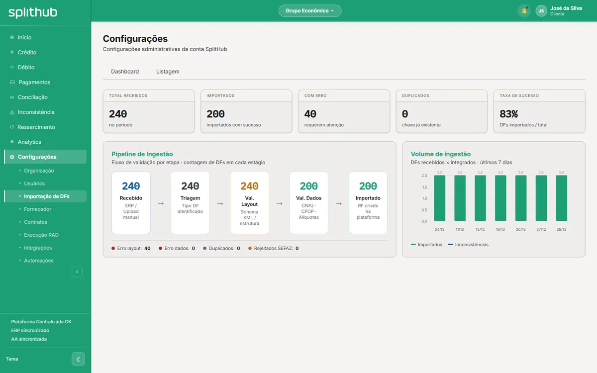
| ID | Fase | Cenário e dados | Resultado esperado — critério de aceite | Responsável | Produto hoje |
|---|---|---|---|---|---|
| CT-J02-01 | F3 | Enviar uma NF-e de entrada com CBS de R$ 1.000,00 e IBS de R$ 2.000,00. | Documento importado; dois RFs criados com os valores exatos; nao_apropriado; partição 100% em A apropriar. | Analista fiscal | Implementado |
| CT-J02-02 | F3 | Enviar um lote de 500 documentos. | Lote processado de forma assíncrona, com identificador; a contagem final é 500, sem perda nem duplicidade. | TI do cliente | Parcial |
| CT-J02-03 | F3 | Reenviar o mesmo documento; depois reenviar a mesma chave com valor diferente. | O reenvio idêntico não cria RF novo; a chave com conteúdo divergente abre duplicidade_rf. | Analista fiscal | Parcial |
| CT-J02-04 | F3 | Enviar um documento com chave de acesso inválida. | Recusado com a mensagem da verificação; ocorrência chave_invalida (família A). | Analista fiscal | Parcial |
| CT-J02-05 | F3 | Enviar um documento destinado a um CNPJ fora da organização. | Ocorrência cnpj_divergente; nenhum RF criado. | Analista fiscal | Parcial |
| CT-J02-06 | F3 | Enviar um documento de saída (NFCom ou NF-e de venda). | O documento aparece em Débito e não em Crédito, com RFs de débito de CBS e de IBS. | Analista fiscal | Implementado |
| CT-J02-07 | F3 | Enviar notas de um fornecedor com contrato RAD e de outro sem contrato. | A primeira herda RAD; a segunda aparece como não coberta no KPI de cobertura. | Analista fiscal | Implementado |
| CT-J02-08 | F4 | Rodar uma semana de volume real do cliente. | Taxa de sucesso igual ou acima da meta acordada na implantação; nenhum documento sem situação. | Cliente · Positivo | Integração real |
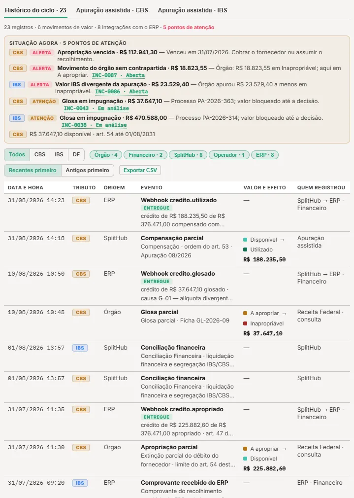
| ID | Fase | Cenário e dados | Resultado esperado — critério de aceite | Responsável | Produto hoje |
|---|---|---|---|---|---|
| CT-J16-01 | F3 | Enviar o cancelamento de uma NF-e de entrada com CBS de R$ 1.000,00 e IBS de R$ 2.000,00. | Evento no histórico, vinculado ao documento; após a confirmação de cada órgão, o saldo de cada RF zera; webhook entregue ao ERP. | Analista fiscal | Parcial |
| CT-J16-02 | F3 | Enviar uma nota de crédito de devolução parcial de R$ 500,00 de CBS. | Vínculo com o documento original; só o RF de CBS é reduzido, em R$ 500,00, depois da confirmação da Receita Federal. | Analista fiscal | Parcial |
| CT-J16-03 | F3 | A Receita Federal confirma a CBS; o Comitê Gestor ainda não confirmou o IBS. | Só o RF de CBS move; o de IBS segue pendente; nenhum total soma os dois tributos. | Analista fiscal | Parcial |
| CT-J16-04 | F3 | O órgão confirma valor diferente do enviado pelo ERP. | Uma ocorrência por tributo divergente, com link para o documento e o RF; nenhum valor aplicado automaticamente. | Analista fiscal | Parcial |
| CT-J16-05 | F3 | Reenviar o mesmo evento. | O reenvio não duplica o efeito no saldo. | TI do cliente | Parcial |
| CT-J16-06 | F2 | Derrubar o endpoint de saída e gerar um evento. | Retentativa com espera progressiva; ao esgotar, ocorrência de integração com a opção de reenviar. | TI do cliente | Parcial |
rad.darf_received com chave de idempotência; protocolo do ERP gravado
RiscoFalha silenciosa: guia gerada e nunca paga, crédito perdido sem nenhum aviso
InstrumentoAba Histórico e falhas, com reprocessamento
POST /v1/rad/proofsSe o fornecedor escriturou a duplicata e a cedeu a terceiro, pagar o RAD expõe a empresa a pagamento duplo. A validação ficou fora da execução automática por decisão de escopo, e com o modo automático não há humano no caminho para notar. O fluxo está descrito em Duplicata escritural. Também seguem em aberto: juros e multa são simulados nesta versão, e a guia vencida sem pagamento (C-01) está em estudo.
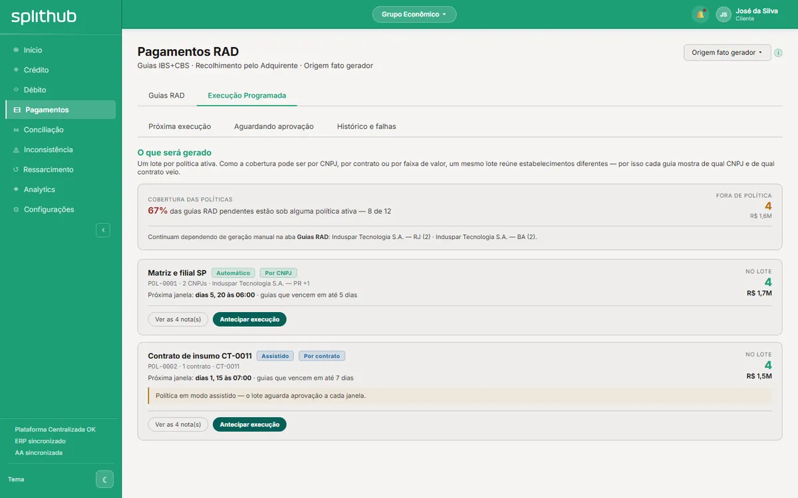
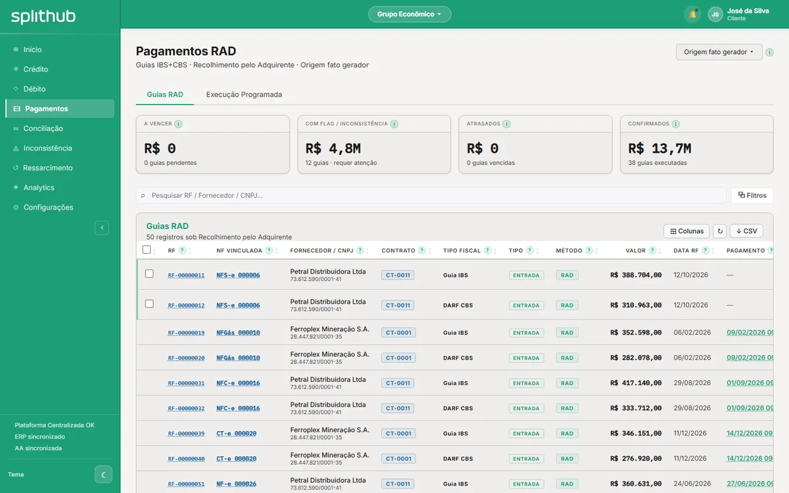
| ID | Fase | Cenário e dados | Resultado esperado — critério de aceite | Responsável | Produto hoje |
|---|---|---|---|---|---|
| CT-J03-01 | F3 | Nota com contrato RAD vencendo em 3 dias; política automática com antecedência de 5 dias. | As guias aparecem em Próxima execução antes da janela e são geradas nela, sem ação humana. | Tesouraria | Implementado |
| CT-J03-02 | F3 | Documento com CBS de R$ 1.000,00 e IBS de R$ 2.000,00. | Duas guias — DARF de R$ 1.000,00 e guia do IBS de R$ 2.000,00 —, nunca somadas. | Tesouraria | Implementado |
| CT-J03-03 | F3 | Política em modo assistido: aprovar uma janela e recusar outra. | A janela aprovada é enviada; a recusada não gera envio; as duas decisões ficam na trilha. | Tesouraria | Implementado |
| CT-J03-04 | F2 | Reenviar ao ERP o mesmo lote. | A chave de idempotência impede o pagamento em dobro; protocolo único gravado. | TI do cliente | Implementado |
| CT-J03-05 | F2 | Derrubar o endpoint do ERP durante a janela. | Retentativa com espera progressiva; a falha aparece em Histórico e falhas, com opção de reprocessar. | TI do cliente | Implementado |
| CT-J03-06 | F3 | O ERP envia o comprovante por POST /v1/rad/proofs. | Guia marcada paga, com comprovante vinculado; o crédito não se apropria até a confirmação do órgão. | TI · Tesouraria | Implementado |
| CT-J03-07 | F3 | Duas políticas ativas alcançam o mesmo RF. | O aviso nomeia o par; a guia não sai em duplicidade. | Tesouraria | Implementado |
| CT-J03-08 | F4 | Um mês de janelas em produção. | Zero guias vencidas; taxa de automação e de entrega na primeira tentativa dentro da meta acordada. | Tesouraria · Positivo | Integração real |
O resultado do confronto é derivado de um valor determinístico, não de uma consulta à apuração assistida (DEF-01 do PRD de Conciliação). Por isso os casos de conciliação deste caderno são executados no sandbox do cliente, com as leituras reais da Receita Federal e do Comitê Gestor.
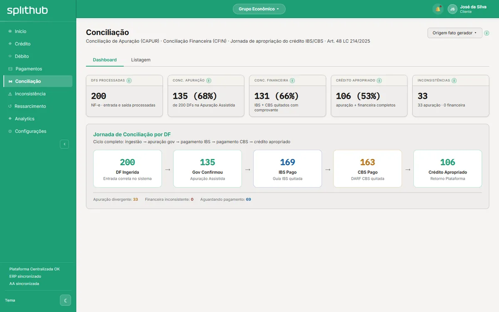
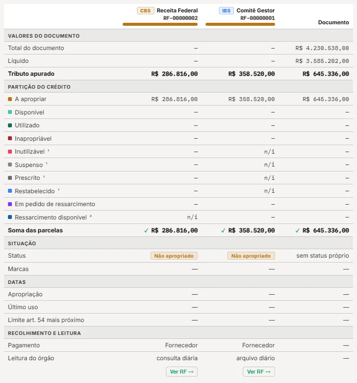
| ID | Fase | Cenário e dados | Resultado esperado — critério de aceite | Responsável | Produto hoje |
|---|---|---|---|---|---|
| CT-J04-01 | F2 | Rodar a leitura diária da CBS por uma semana. | Uma coleta por dia, com protocolo, respeitando o limite de chamadas; falha gera retentativa e alerta. | TI · Positivo | Integração real |
| CT-J04-02 | F2 | Receber um arquivo do IBS com campos não informados. | Arquivo preservado e processado; os campos ausentes aparecem como n/i, fora da soma. | TI · Positivo | Integração real |
| CT-J04-03 | F3 | Documento com CBS de R$ 1.000,00 e IBS de R$ 2.000,00; os dois órgãos apuram os mesmos valores. | CAPUR conciliada nos dois tributos, com delta zero. | Analista fiscal | Integração real |
| CT-J04-04 | F3 | O Comitê Gestor apura IBS de R$ 1.800,00 para o mesmo documento. | Ocorrência capur_ibs_divergente com delta de R$ 200,00 e órgão Comitê Gestor; nenhum ajuste automático. | Analista fiscal | Integração real |
| CT-J04-05 | F3 | A Receita Federal reconhece R$ 600,00 dos R$ 1.000,00 de CBS. | Partição: R$ 400,00 em A apropriar e R$ 600,00 em Disponível; a soma das parcelas fecha; prazo do art. 54 da fatia a partir do primeiro dia do período seguinte. | Analista fiscal | Parcial |
| CT-J04-06 | F3 | O órgão glosa R$ 200,00 do IBS. | Ficha de glosa criada; R$ 200,00 em Inapropriável; evento de glosa ao ERP; recomendação conforme a situação da glosa. | Analista fiscal | Parcial |
| CT-J04-07 | F3 | O fornecedor recolhe a CBS e não recolhe o IBS. | O documento fica em inconsistência financeira; o IBS não se apropria; a CBS segue independente. | Analista fiscal | Implementado |
| CT-J04-08 | F3 | Apropriação de uma fatia. | Evento credit.appropriated entregue ao ERP com o valor da fatia e o tributo. | TI do cliente | Implementado |
| CT-J04-09 | F4 | Primeiro mês em produção. | Aproveitamento dentro da meta acordada; nenhum crédito apropriado sem leitura do órgão. | Cliente · Positivo | Integração real |
apur_df_sem_registro → J-05.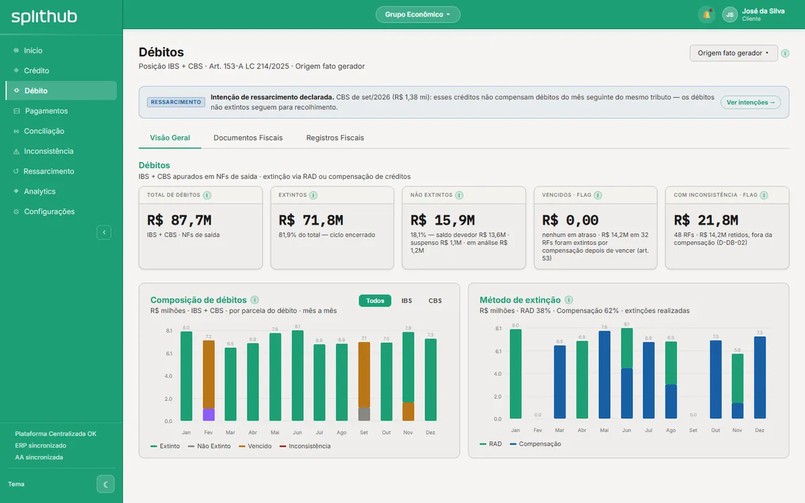
| ID | Fase | Cenário e dados | Resultado esperado — critério de aceite | Responsável | Produto hoje |
|---|---|---|---|---|---|
| CT-J17-01 | F3 | Emitir uma NFCom com CBS de R$ 1.000,00 e IBS de R$ 2.000,00. | Dois RFs de débito com os valores exatos, em Débito → Documentos Fiscais. | Analista fiscal | Implementado |
| CT-J17-02 | F3 | Com R$ 600,00 de crédito de CBS disponível, apurar um débito de CBS de R$ 1.000,00. | R$ 600,00 compensados e R$ 400,00 a recolher; o débito de IBS não é tocado. | Analista fiscal | Implementado |
| CT-J17-03 | F3 | Documento com o IBS extinto e a CBS não. | O documento não aparece como Extinto. | Analista fiscal | Defeito conhecido |
| CT-J17-04 | F3 | Documento emitido sem registro no órgão depois de 30 dias. | Ocorrência apur_df_sem_registro, com o órgão nomeado. | Analista fiscal | Integração real |
| CT-J17-05 | F3 | Exportar a aba de documentos de saída em CSV. | Status, inconsistência e método preenchidos no arquivo. | Analista fiscal | Defeito conhecido |
| CT-J17-06 | F4 | Carregar um ciclo real de faturamento. | A fila absorve o pico; todos os documentos com RF dentro do prazo acordado. | TI · Positivo | Integração real |
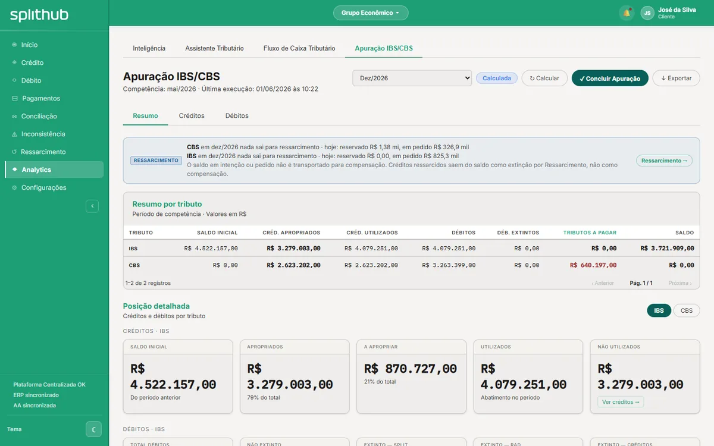
| ID | Fase | Cenário e dados | Resultado esperado — critério de aceite | Responsável | Produto hoje |
|---|---|---|---|---|---|
| CT-J15-01 | F3 | CBS: crédito apropriado de R$ 600,00 e débito de R$ 1.000,00. | Saldo a recolher de R$ 400,00 em guia; o IBS apurado à parte. | Analista fiscal | Implementado |
| CT-J15-02 | F3 | CBS: crédito de R$ 1.500,00 e débito de R$ 1.000,00. | Saldo credor de R$ 500,00, transportado e aberto no período seguinte como saldo anterior. | Analista fiscal | Implementado |
| CT-J15-03 | F3 | Saldo vencido de R$ 300,00 e débitos do período. | O saldo vencido é consumido primeiro; os vínculos aparecem no detalhe de cada RF. | Analista fiscal | Implementado |
| CT-J15-04 | F3 | Mês com crédito apropriado e nenhum documento emitido. | O período existe, marcado como só créditos apropriados. | Analista fiscal | Implementado |
| CT-J15-05 | F3 | Comparar o valor a recolher com a apuração assistida de cada órgão. | Valores iguais por tributo; diferença abre ocorrência. | Analista fiscal | Integração real |
| CT-J15-06 | F4 | Primeiro fechamento em paralelo com o processo atual do cliente. | Diferença zero, ou toda diferença explicada por uma ocorrência. | Controladoria · Positivo | Integração real |
O que trata o que o ciclo deixa passar, e o que protege o crédito do prazo e do contrato.
A ficha de glosa registra a situação — aberta, impugnada, revertida ou definitiva — e traz uma recomendação curta para cada uma. O contencioso corre fora da ferramenta e, protocolado, é registrado na ficha.
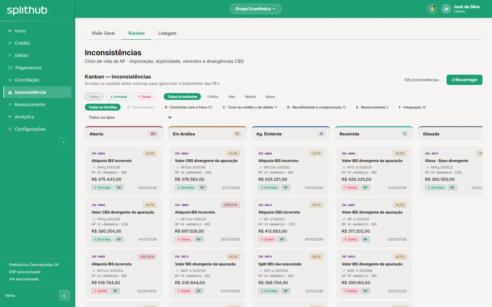
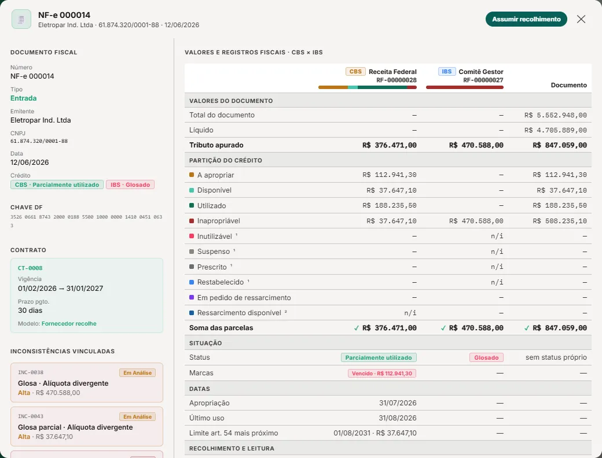
| ID | Fase | Cenário e dados | Resultado esperado — critério de aceite | Responsável | Produto hoje |
|---|---|---|---|---|---|
| CT-J05-01 | F3 | Divergência de R$ 200,00 no IBS de um documento. | Ocorrência aberta, família B, órgão Comitê Gestor, valor em risco de R$ 200,00; card visível no documento e no RF. | Analista fiscal | Implementado |
| CT-J05-02 | F3 | Divergência nos dois tributos do mesmo documento. | Duas ocorrências, uma por tributo. | Analista fiscal | Implementado |
| CT-J05-03 | F3 | Assumir uma ocorrência sem informar responsável. | A passagem para em análise exige responsável. | Analista fiscal | Parcial |
| CT-J05-04 | F3 | Mover para aguardando emitente. | O prazo interno fica suspenso e o terceiro, registrado. | Analista fiscal | Parcial |
| CT-J05-05 | F3 | Resolver uma ocorrência sem descrever o desfecho. | A ocorrência não fecha sem desfecho. | Analista fiscal | Parcial |
| CT-J05-06 | F3 | Glosar uma ocorrência. | Exige ficha de glosa vinculada; o valor sai do fluxo de apropriação. | Analista fiscal | Parcial |
| CT-J05-07 | F3 | Detectar de novo a mesma causa num documento com ocorrência resolvida. | A ocorrência original é reaberta; nenhuma segunda é criada. | Analista fiscal | Não implementado |
| CT-J05-08 | F2 | Ligar a integração com o sistema de chamados do cliente. | Os eventos escolhidos abrem chamado, com o mapeamento de campos configurado. | TI do cliente | Parcial |
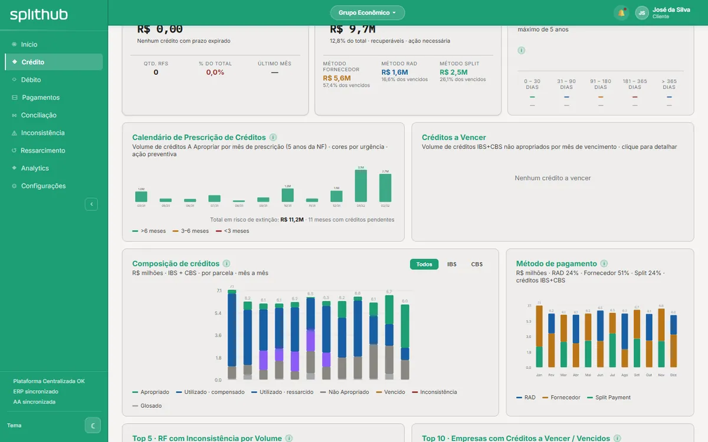
| ID | Fase | Cenário e dados | Resultado esperado — critério de aceite | Responsável | Produto hoje |
|---|---|---|---|---|---|
| CT-J06-01 | F3 | Documentos a apropriar com idades de 20, 70 e 200 dias. | Cada um na faixa correta do ageing; a soma das faixas é igual ao total a apropriar. | Gestor fiscal | Implementado |
| CT-J06-02 | F3 | Crédito com limite do art. 54 em um mês determinado. | Aparece no calendário de prescrição naquele mês. | Gestor fiscal | Parcial |
| CT-J06-03 | F3 | Num documento de fornecedor inadimplente, usar Assumir recolhimento. | O documento passa a RAD, a guia entra em J-03 e o portal mostra o aviso ao fornecedor. | Tesouraria | Implementado |
| CT-J06-04 | F1 | Configurar a régua de cobrança com etapas antes e depois do vencimento. | Régua salva com etapas, canal e condição. O disparo real ainda não existe. | Gestor fiscal | Parcial |
| CT-J06-05 | F3 | Crédito com prazo expirado. | Aparece em Créditos Prescritos e sai do aproveitável. | Gestor fiscal | Implementado |
| CT-J06-06 | F4 | Primeiro trimestre em produção. | Valor prescrito no período igual a zero. | Gestor fiscal | Integração real |
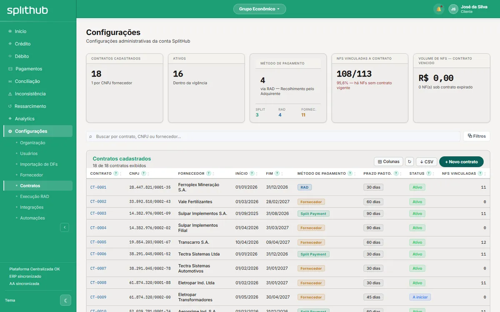
| ID | Fase | Cenário e dados | Resultado esperado — critério de aceite | Responsável | Produto hoje |
|---|---|---|---|---|---|
| CT-J07-01 | F1 | Conferir a cobertura depois da carga de contratos. | 100% dos CNPJs fornecedores do escopo com contrato vigente. | Administrador | Implementado |
| CT-J07-02 | F1 | Cadastrar um contrato com vigência sobreposta à de outro. | Gravação recusada, com o conflito nomeado. | Administrador | Implementado |
| CT-J07-03 | F3 | Trocar o método de RAD para Fornecedor. | Só as notas futuras mudam; o histórico registra o diff com autor e data. | Administrador | Implementado |
| CT-J07-04 | F3 | Encerrar um contrato. | A confirmação declara o impacto; o evento fica no histórico. | Administrador | Implementado |
| CT-J07-05 | F3 | Deixar um contrato vencer. | O fornecedor aparece no filtro sem contrato ativo no dia seguinte, sem sincronização manual. | Administrador | Implementado |
| CT-J07-06 | F3 | Política RAD por contrato com contrato vencido. | As notas do contrato vencido saem do alcance da política. | Tesouraria | Implementado |
Saldos credores de 2026 não são ressarcidos. No protótipo a regra está desligada (simulação) para a tela não abrir vazia; na implantação, os casos deste caderno valem a partir dos saldos de 2027.
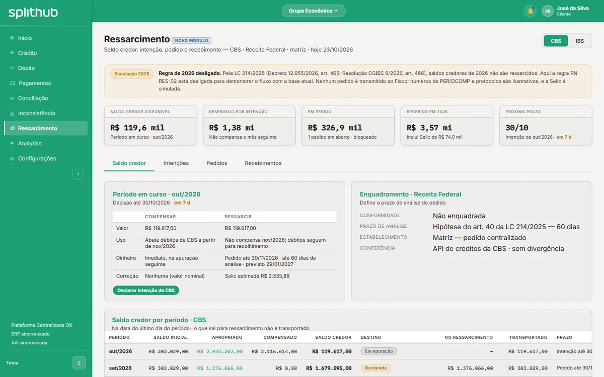
| ID | Fase | Cenário e dados | Resultado esperado — critério de aceite | Responsável | Produto hoje |
|---|---|---|---|---|---|
| CT-J14-01 | F3 | Período com saldo credor de R$ 10.000,00 de CBS. | O saldo aparece no período, separado do IBS, com destino e prazo. | Analista fiscal | Implementado |
| CT-J14-02 | F3 | Declarar e depois cancelar a intenção. | Declarada, o saldo fica reservado e não compensa; cancelada, volta a compensar na hora. | Analista fiscal | Implementado |
| CT-J14-03 | F3 | Declarar intenção acima de R$ 1,5 milhão. | Exige aprovação, registrada na intenção. | Analista fiscal | Implementado |
| CT-J14-04 | F3 | Pedido parcial de R$ 6.000,00 dos R$ 10.000,00 reservados. | Os R$ 4.000,00 não pedidos voltam a compensar desde a data do pedido. | Analista fiscal | Implementado |
| CT-J14-05 | F3 | Deferimento parcial de R$ 5.000,00 dos R$ 6.000,00. | R$ 1.000,00 voltam ao saldo na data da decisão e aparecem na apuração como devolução. | Analista fiscal | Implementado |
| CT-J14-06 | F3 | Recebimento do deferido corrigido pela Selic. | Recebimento conciliado; RFs do pedido como utilizado, com método Ressarcimento. | Tesouraria | Implementado |
| CT-J14-07 | F3 | Tentar incluir crédito glosado numa intenção. | Crédito glosado não é elegível. | Analista fiscal | Implementado |
Quem lê o resultado, quem está do outro lado e quem só precisa de uma resposta.
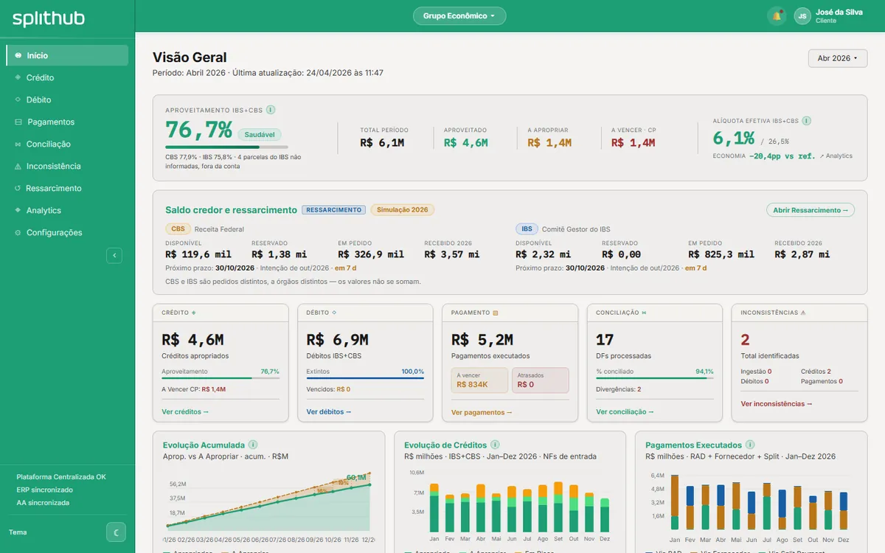
| ID | Fase | Cenário e dados | Resultado esperado — critério de aceite | Responsável | Produto hoje |
|---|---|---|---|---|---|
| CT-J08-01 | F3 | Comparar o aproveitamento do Início com o do Crédito no mesmo recorte. | Mesmo número; CBS e IBS também separados; parcela do IBS não informada fora da conta. | Controladoria | Implementado |
| CT-J08-02 | F3 | Aplicar o filtro de grupo econômico. | O recorte atravessa todos os cartões e gráficos da tela. | Controladoria | Implementado |
| CT-J08-03 | F3 | Ler o cartão de saldo credor. | Valores por órgão — Receita Federal e Comitê Gestor —, nunca somados. | CFO | Implementado |
| CT-J08-04 | F1 | Agendar o relatório mensal de créditos. | Relatório salvo com destinatários, formato e recorrência. O envio real ainda não existe. | Administrador | Parcial |
| CT-J08-05 | F3 | Exportar uma listagem filtrada em CSV. | O arquivo respeita o filtro e as colunas visíveis. | Controladoria | Implementado |
O PRD do Portal chama as três subjornadas de J-11, J-12 e J-13, e o aviso de recolhimento assumido de J-08. Este documento as mantém dentro de J-09 — como J-09.1, J-09.2 e J-09.3 — e reserva J-11 a J-13 para que nenhum ID global tenha dois significados.
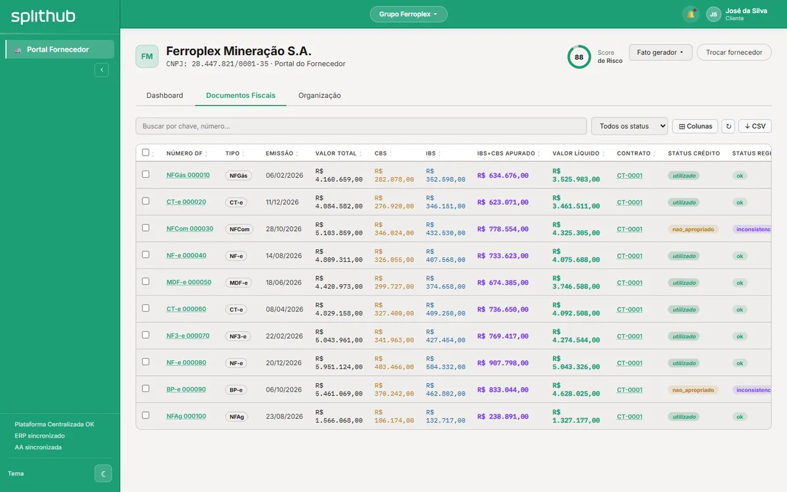
| ID | Fase | Cenário e dados | Resultado esperado — critério de aceite | Responsável | Produto hoje |
|---|---|---|---|---|---|
| CT-J09-01 | F3 | Entrar com o acesso de um fornecedor que responde por matriz e uma filial. | Vê só os documentos dos dois CNPJs; não vê Crédito, Débito, Pagamentos nem Conciliação. | Fornecedor · Positivo | Implementado |
| CT-J09-02 | F3 | Abrir um documento com CBS recolhida e IBS em aberto. | Os dois tributos em linhas próprias, cada um com a sua situação. | Fornecedor | Implementado |
| CT-J09-03 | F3 | Anexar o comprovante PIX à guia. | Comprovante vinculado à guia; a conciliação financeira do adquirente passa a vê-lo. | Fornecedor | Implementado |
| CT-J09-04 | F3 | Abrir um documento que o adquirente converteu para RAD. | O aviso de recolhimento assumido aparece antes de qualquer ação de recolher. | Fornecedor | Implementado |
| CT-J09-05 | F3 | Contestar um documento vencido e mandar uma mensagem. | Contestação registrada com trilha; a mensagem chega ao adquirente. | Fornecedor | Parcial |
| CT-J09-06 | F1 | Revogar o acesso de um fornecedor. | O login é bloqueado; o último acesso fica visível para o adquirente. | Administrador | Implementado |
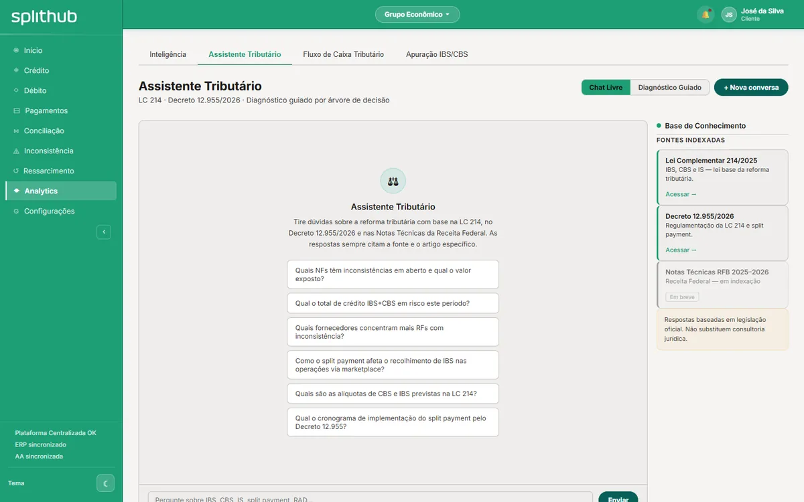
| ID | Fase | Cenário e dados | Resultado esperado — critério de aceite | Responsável | Produto hoje |
|---|---|---|---|---|---|
| CT-J10-01 | F3 | Perguntar quando o crédito do adquirente se apropria. | A resposta cita o dispositivo da LC 214/2025 de onde saiu. | Analista fiscal | Implementado |
| CT-J10-02 | F3 | Perguntar algo fora da legislação indexada. | O assistente diz que não tem fonte, em vez de inventar. | Analista fiscal | Parcial |
| CT-J10-03 | F3 | Pedir o crédito total de IBS e CBS do período. | Os números vêm por tributo, nunca somados. | Analista fiscal | Implementado |
| CT-J10-04 | F3 | Percorrer o diagnóstico guiado de uma devolução. | A árvore termina num enquadramento com a referência. | Analista fiscal | Implementado |
| CT-J10-05 | F3 | Recarregar a página no meio de um diagnóstico. | O histórico se mantém. | Analista fiscal | Defeito conhecido |
A ficha descreve uma jornada; o mapa mostra como elas se alimentam e se interrompem. Cada caixa leva à ficha.
| Relação | Jornadas | Implicação |
|---|---|---|
| Bifurcação por contrato | J-07 → J-02 → J-03 | Uma decisão contratual decide se haverá trabalho de RAD. O custo de J-03 vem de J-07, não do volume. |
| Interrupção sem lugar fixo | J-05 sobre J-02, J-16, J-04, J-17 e J-15 | A ocorrência nasce em qualquer módulo e aparece no documento de origem. Tela isolada obrigaria a reconstruir o contexto. |
| Dois órgãos, dois ritmos | J-04, J-16, J-15 | CBS e IBS confirmam em tempos diferentes. Toda etapa que dependa de confirmação precisa aceitar um tributo pronto e o outro pendente. |
| Realimentação por evidência | J-08 → J-07; J-06 → J-03 | O relatório leva à renegociação, e o risco de prazo leva a assumir o recolhimento. A segunda já é um botão; a primeira ainda é caminho mental. |
Módulo que não aparece em nenhuma jornada é candidato a revisão; jornada com etapa sem módulo é lacuna de produto.
| Módulo | J-01 | J-02 | J-16 | J-03 | J-04 | J-17 | J-15 | J-05 | J-06 | J-07 | J-14 | J-08 | J-09 | J-10 |
|---|---|---|---|---|---|---|---|---|---|---|---|---|---|---|
| Início | — | — | — | — | — | — | — | ○ | ○ | — | ○ | ● | — | — |
| Crédito | — | ○ | ○ | — | ● | — | — | ○ | ● | — | — | ● | — | — |
| Débito | — | ○ | — | — | — | ● | ○ | — | — | — | — | ○ | — | — |
| Pagamentos (RAD) | — | — | — | ● | ○ | — | — | — | ○ | — | — | — | — | — |
| Conciliação | — | — | ● | — | ● | ○ | ○ | — | — | — | — | — | — | — |
| Inconsistências | — | ○ | ○ | — | ○ | ○ | ○ | ● | — | — | — | — | — | — |
| Apuração IBS/CBS | — | — | — | — | ○ | ● | ● | — | — | — | ○ | — | — | — |
| Ressarcimento | — | — | — | — | — | — | ○ | — | — | — | ● | ○ | — | — |
| Analytics | — | — | — | — | — | — | — | — | ○ | — | — | ● | — | ● |
| Config → Organização | ● | — | — | — | — | — | — | — | — | — | ○ | — | — | — |
| Config → Fornecedor | ● | — | — | — | — | — | — | ○ | ○ | ○ | — | — | ○ | — |
| Config → Contratos | ● | ○ | — | ○ | — | — | — | — | — | ● | — | — | — | — |
| Config → Importação de DFs | ● | ● | — | — | — | ○ | — | — | — | — | — | — | — | — |
| Config → Integrações | ● | ○ | ● | ● | ○ | — | — | ○ | — | — | — | — | — | — |
| Config → Execução RAD | ● | — | — | ● | — | — | — | — | ○ | ○ | — | — | — | — |
| Config → Automações | ● | — | — | — | — | — | — | ○ | ● | — | ○ | ● | — | — |
| Config → Usuários | ● | — | — | — | — | — | — | — | — | — | — | — | — | — |
| Portal do Fornecedor | — | — | — | ○ | — | — | — | — | ○ | — | — | — | ● | — |
| API de eventos | — | — | ● | — | — | ○ | — | — | — | — | — | — | — | — |
● módulo central da jornada · ○ participação secundária · — não participa
| Achado | Leitura |
|---|---|
| Integrações aparece em seis jornadas | Virou o segundo núcleo do produto, depois do Crédito. É onde a implantação para ou avança — e onde nasce a família F de inconsistências. |
| Débito deixou de ser marginal | Tem jornada própria (J-17) e alimenta o fechamento. A pergunta da v2.0 — se o débito era escopo secundário — está respondida. |
| O Portal deixou de ser ilha | Recebe a decisão de J-06 (assumir recolhimento) e devolve o comprovante para J-04. |
| Nenhum módulo cobre a validação da duplicata | A etapa que J-03 deveria ter entre gerar e pagar continua sem módulo. É lacuna, não simplificação. |
Os 95 casos se organizam em quatro fases. Cada fase termina num portão: a seguinte só começa com os casos obrigatórios da anterior aprovados.
| Fase | Objetivo | Ambiente | Casos | Portão de saída |
|---|---|---|---|---|
| F1 Configuração | Organização, fornecedores, contratos, política de RAD, usuários e automações | Sandbox | 10 — CT-J01-01, CT-J01-02, CT-J01-03, CT-J01-08, CT-J01-09, CT-J06-04, CT-J07-01, CT-J07-02, CT-J08-04, CT-J09-06 | Cobertura contratual de 100% e perfis validados |
| F2 Integração | Conexões de entrada e saída, leitura da Receita Federal e do Comitê Gestor, entrega ao ERP | Sandbox com o middleware do cliente | 10 — CT-J01-04, CT-J01-05, CT-J01-06, CT-J01-07, CT-J16-06, CT-J03-04, CT-J03-05, CT-J04-01, CT-J04-02, CT-J05-08 | Chamadas aceitas, eventos entregues com assinatura conferida e as duas leituras ativas |
| F3 Homologação | As jornadas ponta a ponta com dados reais do cliente | Sandbox com dados reais | 69 — todos os demais | Casos obrigatórios aprovados e nenhum defeito crítico aberto |
| F4 Operação assistida | Primeiro ciclo em produção, em paralelo com o processo atual | Produção | 6 — CT-J02-08, CT-J03-08, CT-J04-09, CT-J17-06, CT-J15-06, CT-J06-06 | Primeiro fechamento conciliado; termo de aceite assinado |
| Situação | Casos | O que significa para a implantação |
|---|---|---|
| Implementado | 54 | Executáveis desde já |
| Integração real | 14 | Dependem das leituras da Receita Federal e do Comitê Gestor ou do ERP; são o coração da F2 e da F4 |
| Parcial | 23 | Viram itens do plano de entregas, com data, antes do portão da fase |
| Defeito conhecido | 3 | Correção registrada no PRD; precisa estar corrigida antes do aceite |
| Não implementado | 1 | Decisão: entra no escopo da implantação ou sai do aceite, por escrito |
Cada execução registra: ID do caso, data, executor, ambiente, resultado (aprovado, reprovado ou bloqueado), evidência e, quando reprovado, o defeito aberto. Um caso bloqueado por funcionalidade parcial aponta o item do plano de entregas que o destrava.
SplitHub · Referência · Jornadas de Usuário · v3.0 · 26/10/2026